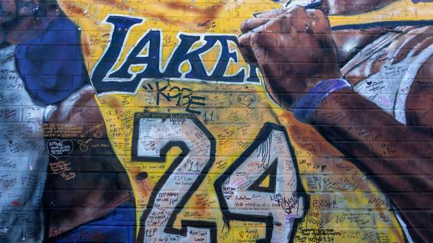
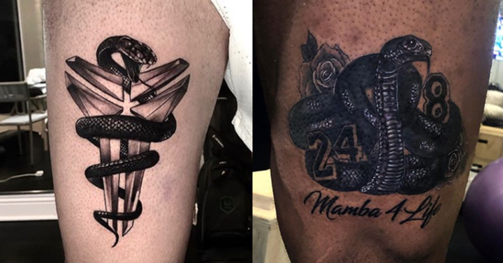
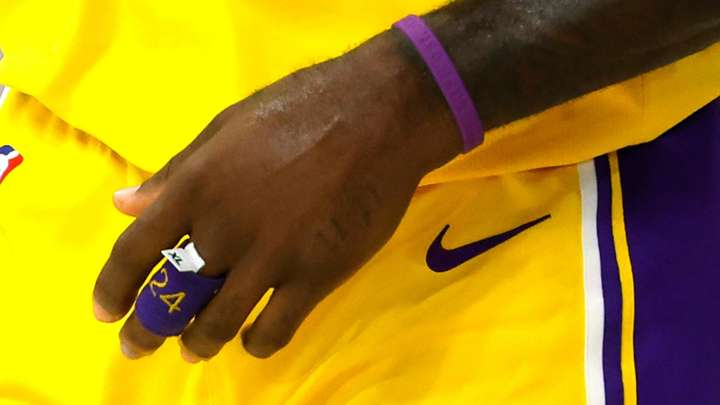
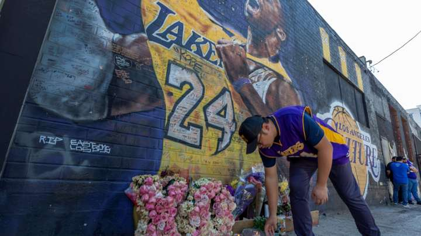
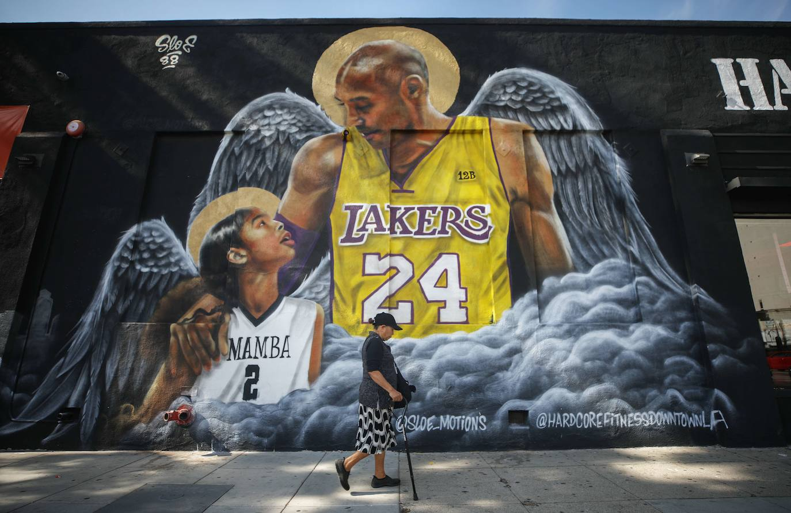

El legado de Kobe Bryant en los jugadores de Los Angeles Lakers, un año después de su muerte
Un año más tarde de que la abrupta desaparición del escolta angelino golpease el mundo del deporte, el equipo dirigido por Frank Vogel cuenta cómo ha llevado la pérdida y cómo ha impactado en la construcción interna del plantel.
La pérdida de Kobe Bryant sigue muy presente en el día a día, un fallecimiento que conmocionó al mundo y al deporte más concretamente de un modo que pocas figuras lo habían hecho anteriormente. La leyenda de Los Angeles Lakers caló muy hondo en varias generaciones por su carácter, incansable actitud competitiva y su afán por ganar y ser el mejor.
Un ejemplo a seguir por muchos aficionados y deportistas que afectó enormemente a los miembros de la franquicia angelina que en las 24 horas posteriores a su muerte vivieron una montaña rusa de emociones, enterándose en pleno vuelo de vuelta a Los Ángeles de la noticia y teniendo que posponer su partido ante LA Clippers que debía disputarse en los días sucesivos al fatídico 26 de enero de 2020.
En ese momento la plantilla de oro y púrpura se marcó un solo objetivo: honrar la memoria de Bryant consiguiendo el campeonato. Aunque en realidad esa meta ya estaba sobre la mesa desde el inicio del curso, pero se vio amplificado a partir de ese momento. Los Lakers pusieron todo su empeño y recursos en alcanzar el ansiado anillo, el primero desde la era del escolta allá por 2010.
Una vez suspendida la competición por la crisis sanitaria y más tarde reanudada en Disney los hombres de Frank Vogel acabaron por demostrarse no solo el conjunto más preparado para consumar el objetivo sino el que más unido estaba, aquel que parecía estar incluso en una misión por la que solo valía ganar.
Desde aquella tarde de domingo en la que Kobe Bryant, su hija Gianna y los otros siete ocupantes del helicóptero que los transportaba fallecieron, los homenajes y recuerdos a su figura no han parado de sucederse. Un año más tarde el 24 sigue muy presente y particularmente en el actual plantel de Lakers que partido tras partido corean un grito grupal antes de saltar al campo: 1-2-3, ¡Mamba!
"Tan devastador y trágico fue y sigue siendo para todos que solo el tiempo lo curará. El tiempo cura todo. Todos tienen su propio proceso de duelo", dijo recientemente LeBron James. "Muchas cosas mueren en este mundo, pero las leyendas nunca lo hacen y eso es lo que era él exactamente. Apreciaba el juego de Kobe por cómo era, le respetaba a él por quién era como jugador", señaló
"A medida que nos acercamos a su primer aniversario, nos entristece el corazón darnos cuenta de que se ha ido", reconoció Anthony Davis en rueda de prensa. "Sé que todavía tengo problemas con eso, todavía no puedes creerlo ... Hasta el día de hoy, repetimos, '¡Mamba a las tres!' cada vez que lo salimos al campo porque queremos reconocer que él es parte de nuestra organización. Y desde que sucedió la tragedia, teníamos la mentalidad de que esto es más grande que, ya sabes, nosotros mismos".
James y Davis han abanderado el recuerdo de Bryant a lo largo del último año, aprovechando cada oportunidad para honrar su legado de manera pública e incluso haciéndose un tatuaje conjunto en memoria de Kobe.
Durante la burbuja de Disney los angelinos estrenaron una equipación especial en honor a Bryant bajo el nombre de Mamba Edition con la que trataron, sin éxito, de coronarse como campeones de la NBA en el Game 5 ante los Heat, algo que tuvo que esperar hasta el sexto encuentro, ya con el tradicional amarillo. Pese a eso, la oportunidad de llevar unas camisetas con tanto significado ha ayudado a convertir al mítico escolta en una figura aún más venerada y respetada al interno de la franquicia californiana.
"Ser capaces de recordarlo y usar las camisetas de Black Mamba durante la postemporada y tener el éxito que tuvimos. Tenemos muchos jugadores que todavía usan sus zapatillas hasta el día de hoy", dijo LeBron sobre el recuerdo en las camisetas. "Llevo un 24 en uno de mis dedos todas las noches, y cuando jugamos en el Staples Center ves ese 8 y 24 en lo alto del estadio y puedes simplemente vivir su legado".
Ese legado trasciende incluso a los jugadores de los Lakers, impregnando también a leyendas y cuerpo técnico que vivieron no solo su época como estrella constrastada sino que fueron sus rivales, mentores o bien le vieron crecer.
"Sentimos su presencia en esta era del baloncesto de los Lakers debido a lo que sucedió y, por el momento, nos vamos a quedar con eso. Veremos qué nos depara el futuro", expresó el entrenador Frank Vogel.
"Su legado siempre estará aquí, su espíritu estará aquí, la gente siempre hablará de él porque, nuevamente, no solo lo que hizo en la cancha, porque vamos a hablar de eso. Pero también, lo que significó para su familia, para los deportes de mujeres, para las personas sin hogar, para las que estaban luchando con algo. Recibían una llamada de él, "Mantén la cabeza en alto". Era único y especial", contó Magic Johnson al LA Times recientemente.
No obstante, no todos han interiorizado la pérdida de Bryant de igual modo y es que su repentino adiós ha afectado de muy diversa manera a todo el mundo. Mientras algunos como LeBron lo han usado como motivación a otros les cuesta expresar lo que significó para ellos, dentro y fuera de las canchas.
"Fue muy duro, especialmente para las personas cercanas a él", dijo Kyle Kuzma. "Para nosotros que lo conocíamos más de cerca que otros, fue difícil. Solo algo que siempre está en tu cabeza. Siempre está en mi cabeza. Una situación muy difícil por la que pasamos el año pasado. Para aquellos que estaban cerca de él, sigue siendo difícil".
En el caso de Marc Gasol, amigo cercano de Bryant, no pudo dar una respuesta concreta cuando fue preguntado. "No estoy cómodo hablando de ello, a día de hoy apenas he hablado de ello y siento no poder darte una mejor respuesta. Él siempre será no solo una parte del equipo, sino de la franquicia, de la ciudad para cualquier jugador. Hablamos de él siempre. Es algo muy emotivo. Alguien al que miramos", afirmó.
El 26 de enero tendrá para siempre la imagen de Kobe Bryant como mejor representación, un hecho que marcó la vida de buena parte del mundo del deporte, pudiendo recordar a la perfección dónde estaba y qué estaba haciendo en el momento que conoció la noticia. La mejor manera de honrar el legado de la estrella de Los Angeles Lakers es sin duda recordar su excelente perfil técnico y su incansable espíritu competitivo que le encumbró a los altares del baloncesto. La rapidez con la que se desvaneció su presencia física le permitirá entrar en el terreno de lo mítico, paso previo a su entrada como leyenda en el panteón de la NBA.
